Основные схемы функций программы
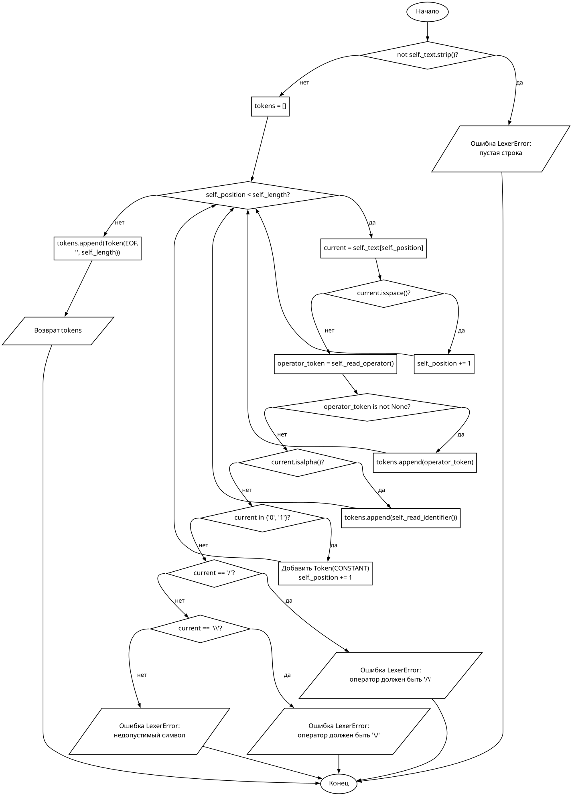
Рис. 1. Метод tokenize класса Lexer
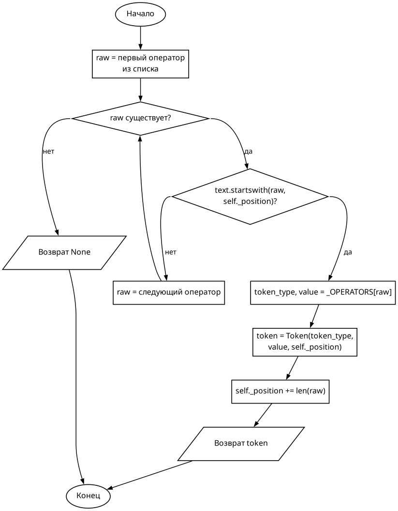
Рис. 2. Метод _read_operator класса Lexer
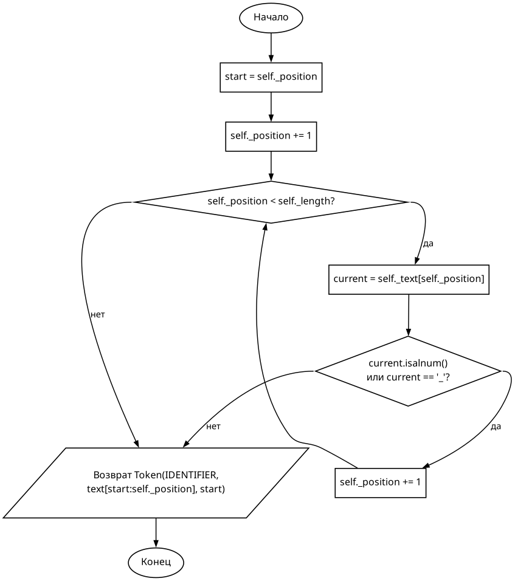
Рис. 3. Метод _read_identifier класса Lexer
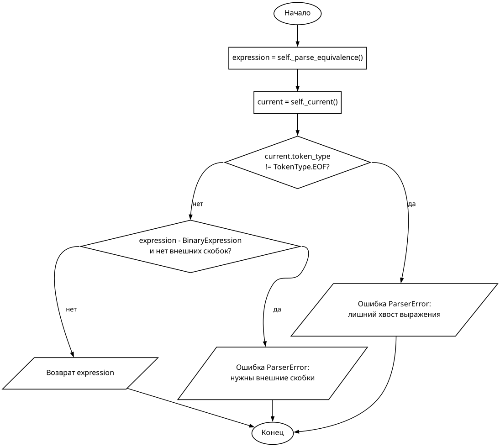
Рис. 4. Метод parse класса Parser
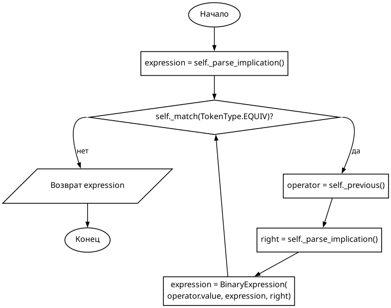
Рис. 5. Метод _parse_equivalence класса Parser
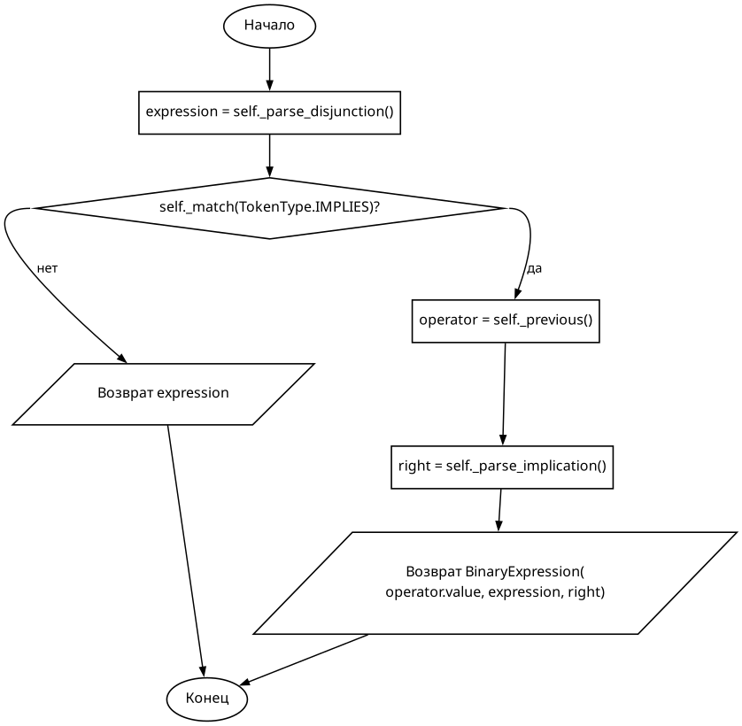
Рис. 6. Метод _parse_implication класса Parser
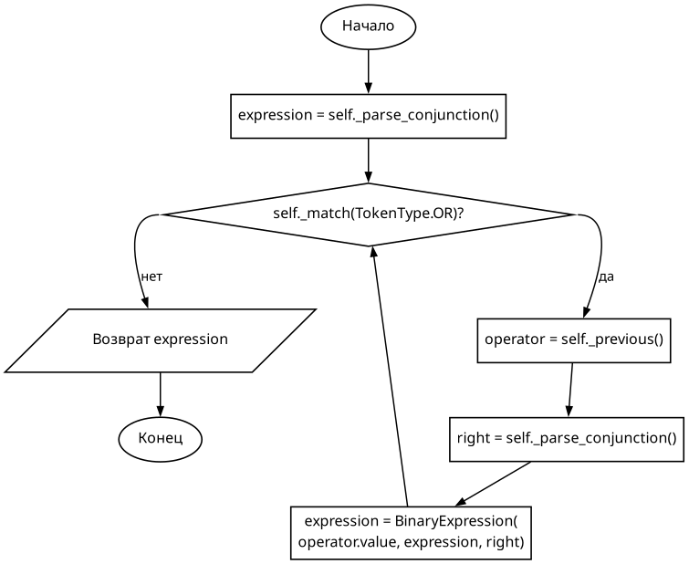
Рис. 7. Метод _parse_disjunction класса Parser
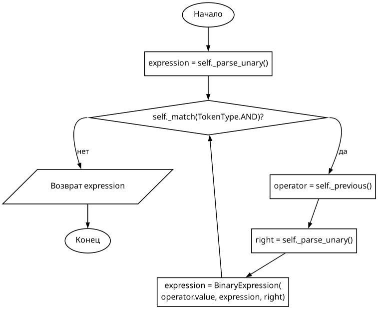
Рис. 8. Метод _parse_conjunction класса Parser
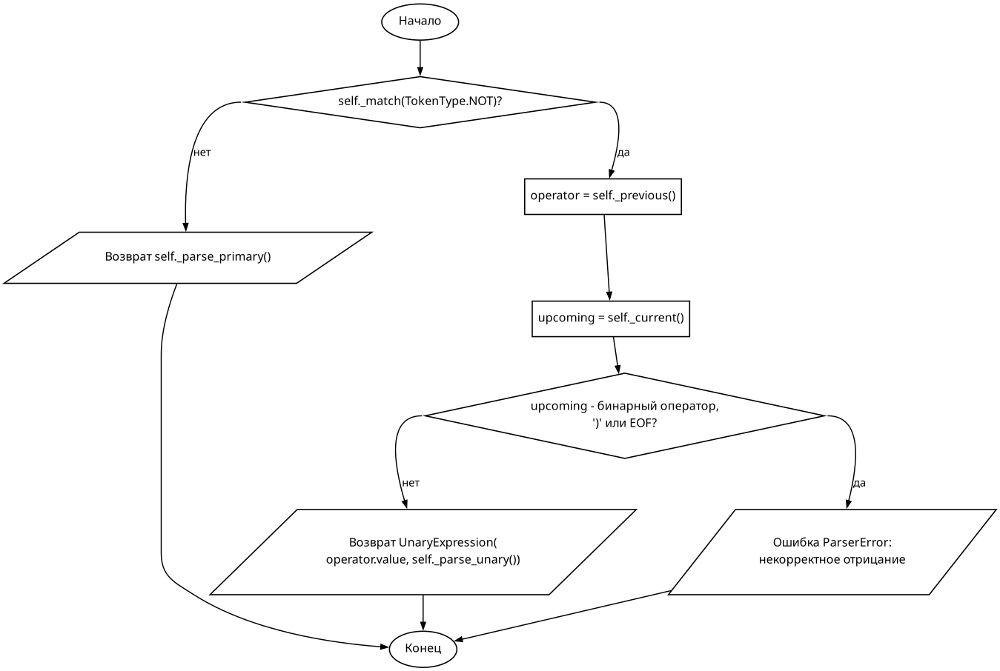
Рис. 9. Метод _parse_unary класса Parser
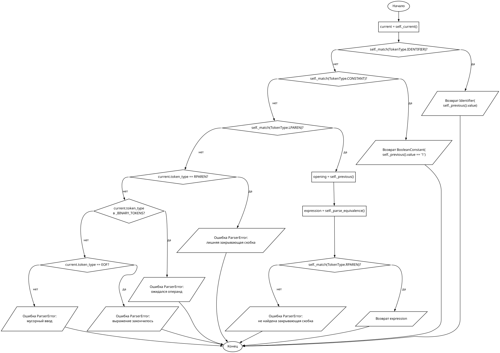
Рис. 10. Метод _parse_primary класса Parser
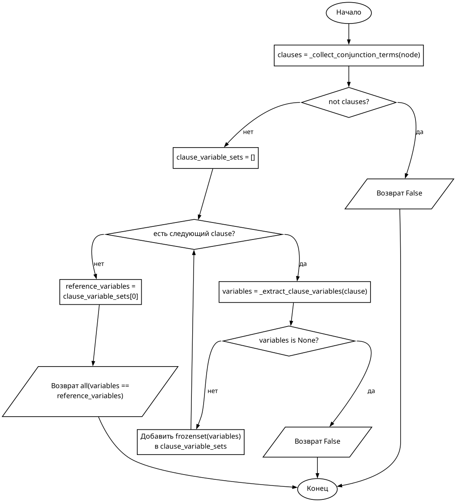
Рис. 11. Функция is_sknf
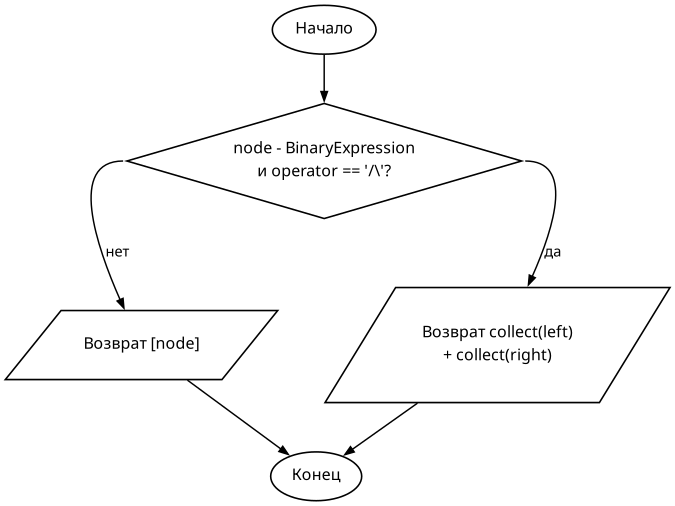
Рис. 12. Функция _collect_conjunction_terms
Рис. 13. Функция _collect_disjunction_terms
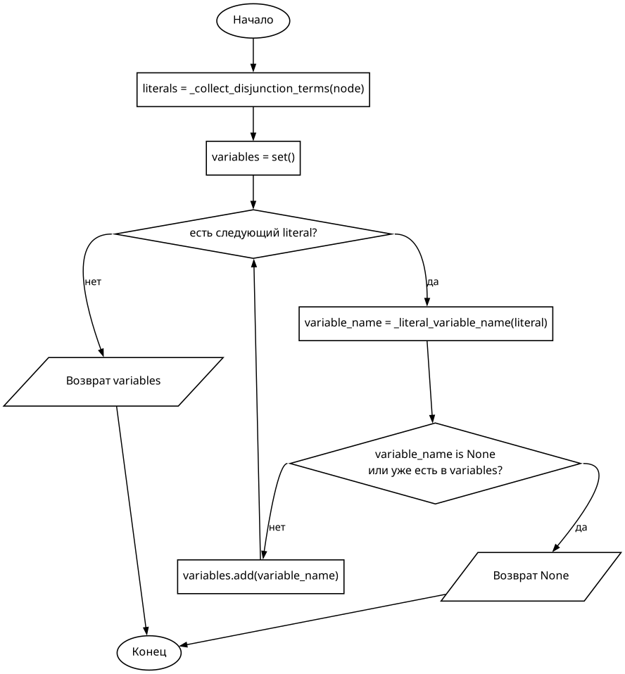
Рис. 14. Функция _extract_clause_variables
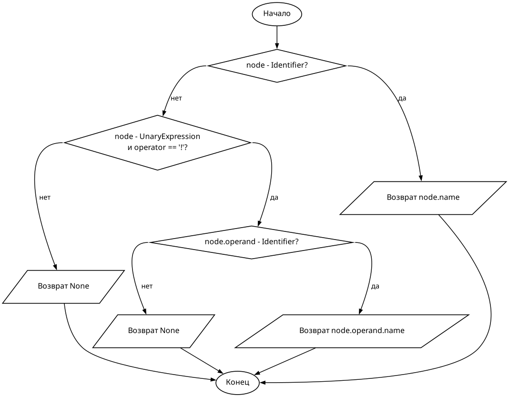
Рис. 15. Функция _literal_variable_name
Неосновные функции и элементы
- _class_diagram.puml / _class_diagram.png - диаграмма структуры классов, не алгоритм функции
- _lexer_init.puml / _lexer_init.png - конструктор Lexer, только инициализирует поля объекта
- _parser_init.puml / _parser_init.png - конструктор Parser, только создает список токенов и индекс
- _parser_unexpected_after_expression.puml / _unexpected_after_expression_Parser.png - формирует текст ошибки
- _parser_match.puml / _match_Parser.png - служебное перемещение по токенам
- _parser_current.puml / _current_Parser.png - служебный доступ к текущему токену
- _parser_previous.puml / _previous_Parser.png - служебный доступ к предыдущему токену
- _parse_formula.puml / _parse_formula_parser.png - функция-обертка над Parser(text).parse()
- _run_main.puml / _run_main.png - пользовательский интерфейс и вызов других функций